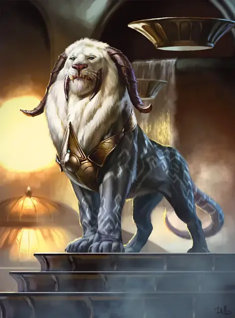

Фелидар
Felidar
Большой Небожитель, законно-нейтральный

Класс Доспеха 17 (природный доспех)
Хиты 93 (11к10 + 33)
Скорость 40 футов
| мод | спас | ||
|---|---|---|---|
| СИЛ | 19 | +4 | +4 |
| ЛОВ | 16 | +3 | +6 |
| ТЕЛ | 17 | +3 | +3 |
| мод | спас | ||
|---|---|---|---|
| ИНТ | 10 | +0 | +0 |
| МДР | 17 | +3 | +6 |
| ХАР | 14 | +2 | +5 |
Навыки Восприятие +6, Проницательность +6
Чувства истинное зрение 120 футов, пассивное Восприятие 16
Языки Общий, Небесный
Опасность 5 (1800 опыта)
Бонус мастерства +3
Особенности
Языки. Понимает Небесный и Общий, но не может говорить.
Связь. Фелидар может магическим образом связать себя с одним существом, которое он может видеть, сразу же после того, как проведет по крайней мере 1 час, наблюдая за этим существом, находясь в пределах 30 футов от него. Связь длится до тех пор, пока фелидар не свяжется с другим существом или пока связанное существо не умрёт. Эта связь имеет следующие эффекты:
• Фелидар и связанное существо могут телепатически общаться друг с другом на расстоянии до 100 футов.
• Фелидар может чувствовать направление и расстояние до связанного существа, если они находятся на одном плане существования.
• Действием фелидар или связанное существо может ощущать то, что видит и слышит другой, на это время он теряет собственное зрение и слух. Этот эффект длится до начала его следующего хода.
Острый слух и зрение. Фелидар совершает с преимуществом проверки Мудрости (Восприятие), полагающиеся на слух или зрение.
Внезапная атака. Если фелидар перемещается как минимум на 20 футов по прямой к существу и попадает по нему атакой когтями в том же ходу, эта цель должна преуспеть в спасброске Силы Сл 15, иначе будет сбита с ног. Если цель сбита с ног, фелидар может бонусным действием совершить по ней одну атаку когтями.
Действия
Мультиатака. Фелидар совершает две атаки: одну укусом и одну когтями.
Укус. Рукопашная атака оружием: +7 к попаданию, досягаемость 5 фт., одна цель. Попадание: 17 (3к8 + 4) колющего урона.
Когти. Рукопашная атака оружием: +7 к попаданию, досягаемость 5 фт., одна цель. Попадание: 14 (3к6 + 4) рубящего урона.
Описание
Фелидар — небожитель, чья природа отражает присущую ему преданность закону и порядку. Он напоминает огромную кошку с двумя парами наклоненных вниз рогов и торчащими зубами. Его серо-голубая шкура имеет серебристый геометрический узор, а густая белая грива упорядоченно ниспадает на плечи.
Почти каждый фелидар образует тесную связь с другим существом. Крылатые фелидары почти всегда связаны с архонтами, присоединяясь к их неустанному стремлению к справедливости. Другие фелидары вступают в союз с членами Сената Азориус и формируют связи с высокопоставленными юстициариями и министрами, помогая им в обеспечении соблюдения закона и выслеживании преступников. Некоторые фелидары Азориусов формируют связи с важными заключенными, находящимися под стражей Азориусов, гарантируя, что фелидары смогут выследить преступников, если они сбегут из-под стражи.
Крылатые фелидары
Некоторые фелидары могут похвастаться огромными оперёнными крыльями. Крылатый фелидар использует тот же блок статистики, что и обычный фелидар, с добавлением скорости полёта в 40 футов.